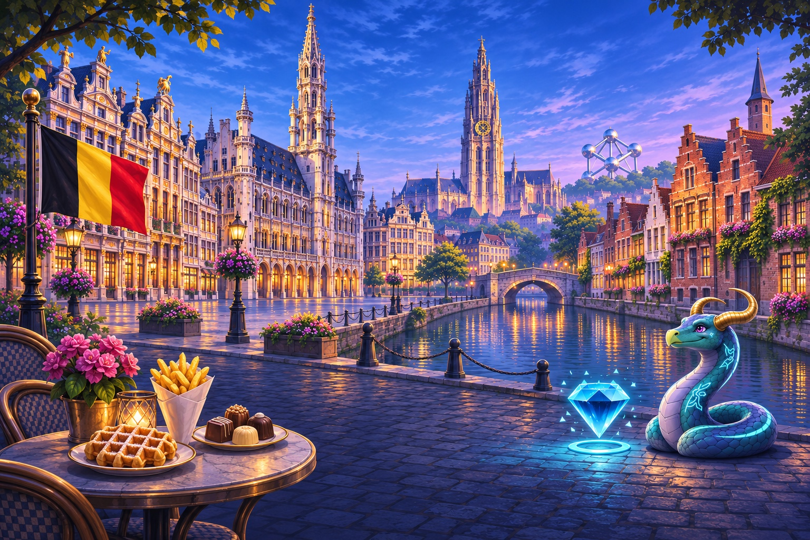

Belgium
Country cover · Brussels Grand Place guildhouses and town hall, Antwerp Cathedral of Our Lady, Bruges stepped-gable canal houses, Atomium in distance. Belgian flag: three equal VERTICAL bands BLACK, YELLOW, RED left to right. Local foods on a small tasteful foreground cafe table at lower left edge: Belgian waffle, paper cone of fries, fine praline chocolates. Keep the food grouping secondary, beautifully painted, no packaging labels.
Download cover